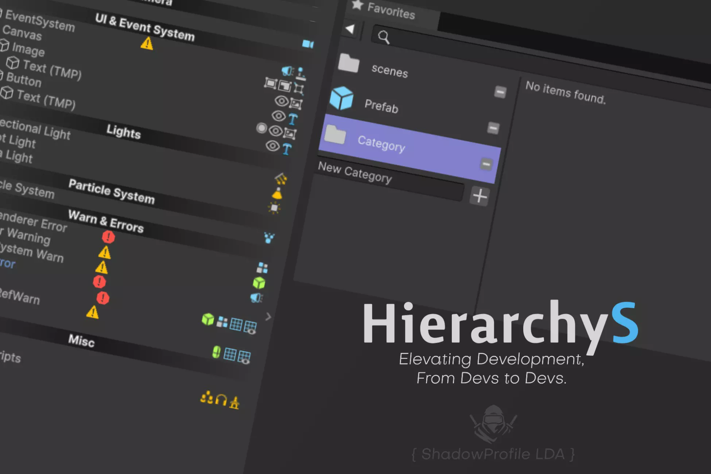
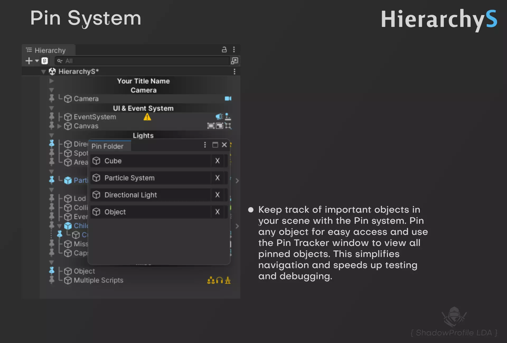
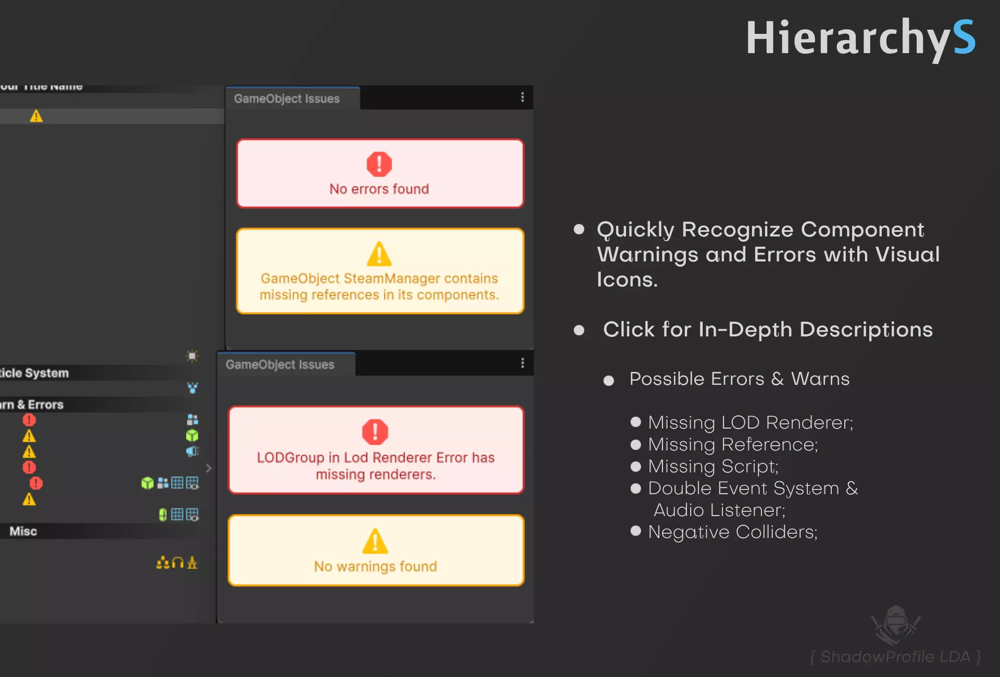
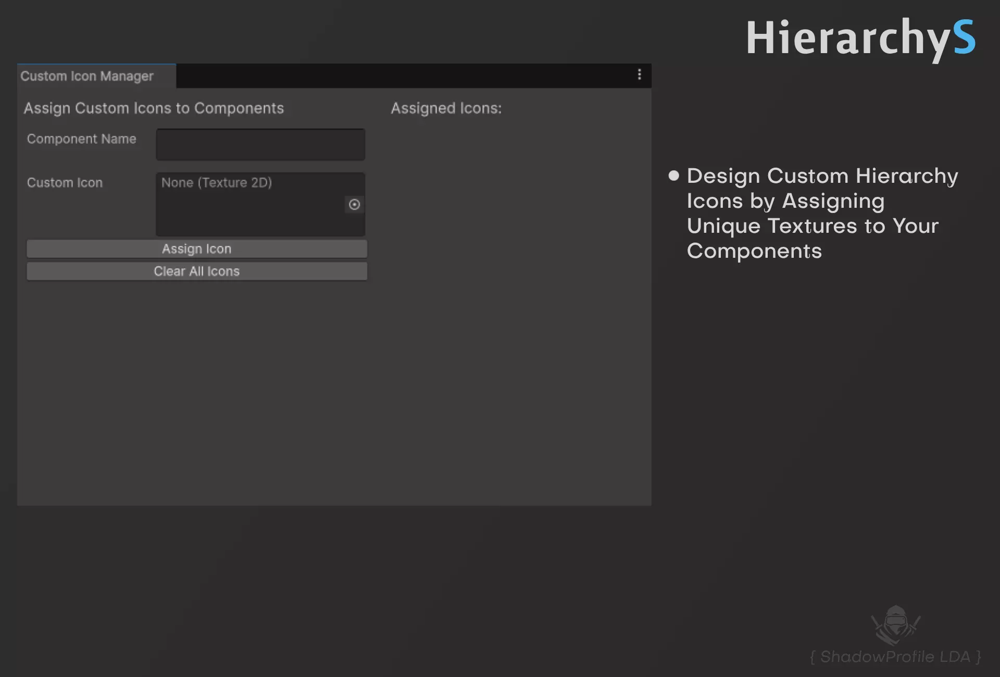
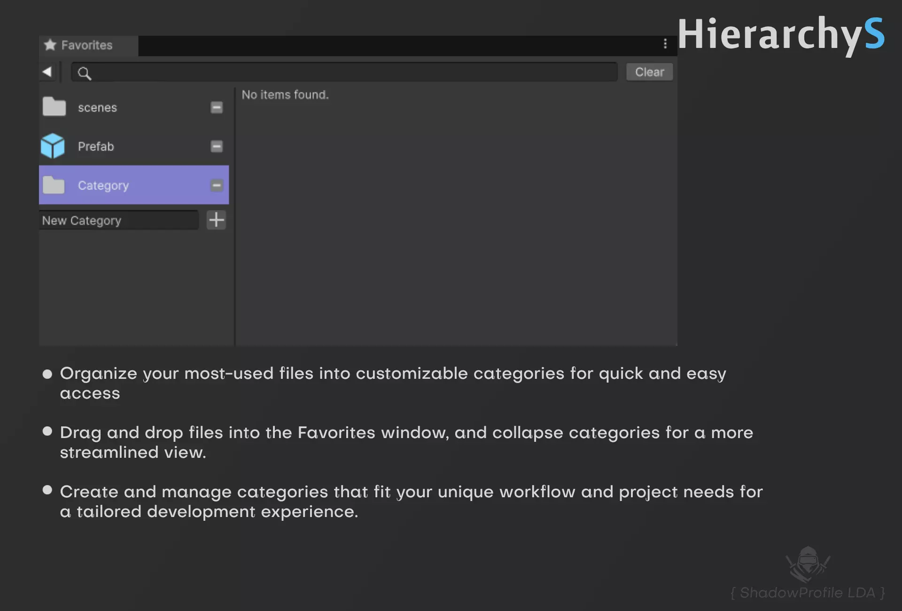
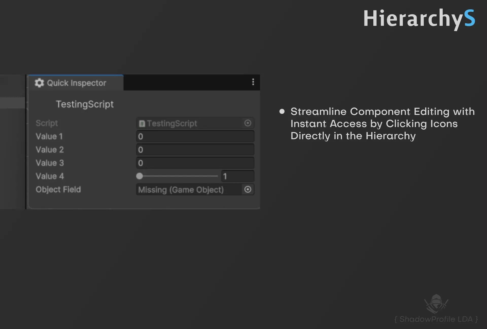
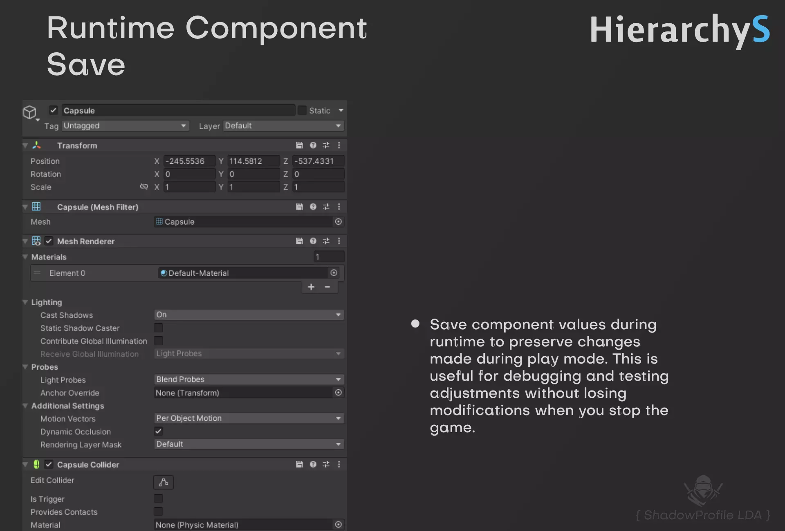
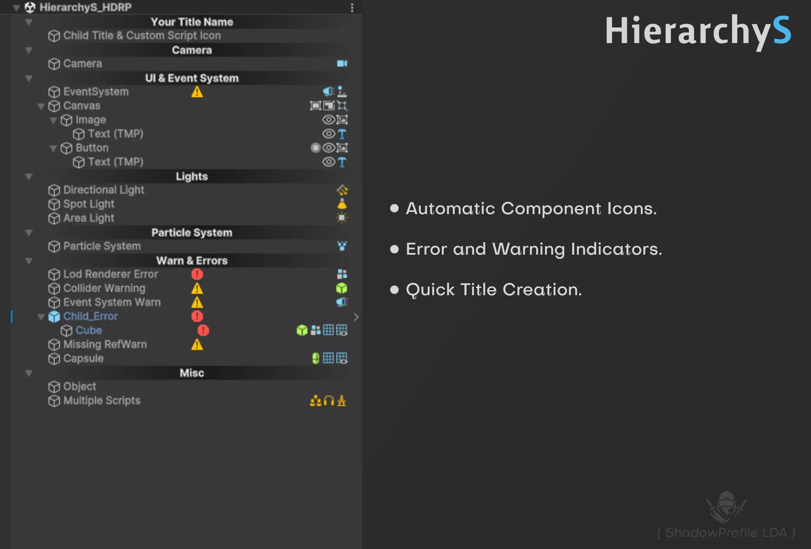
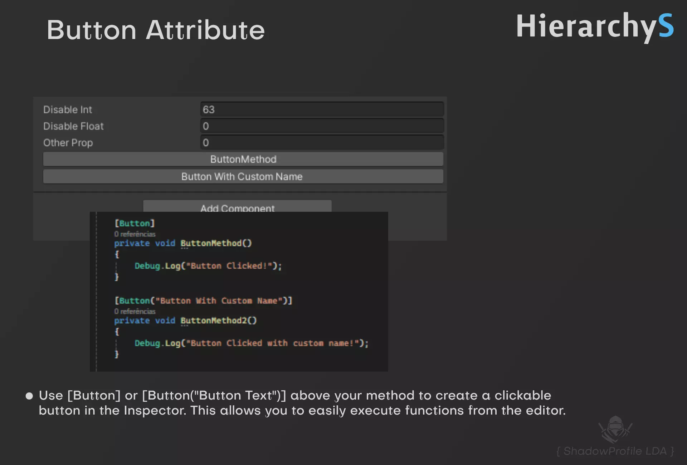
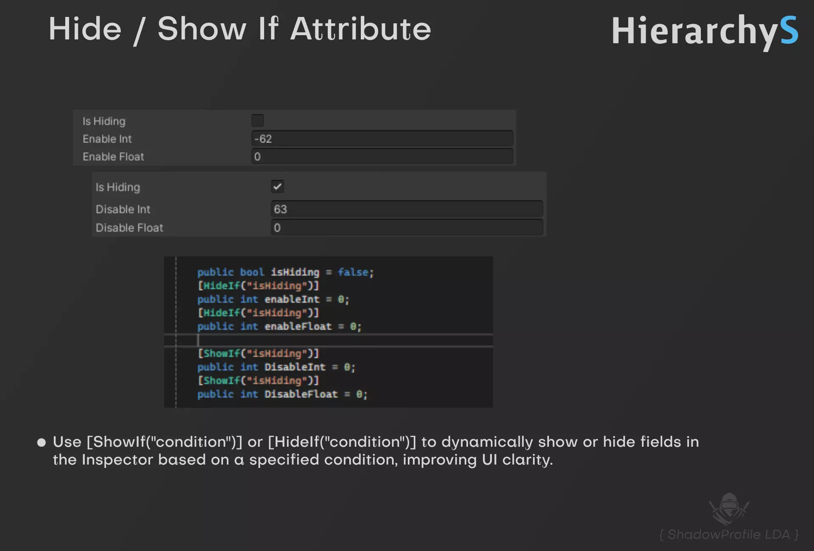

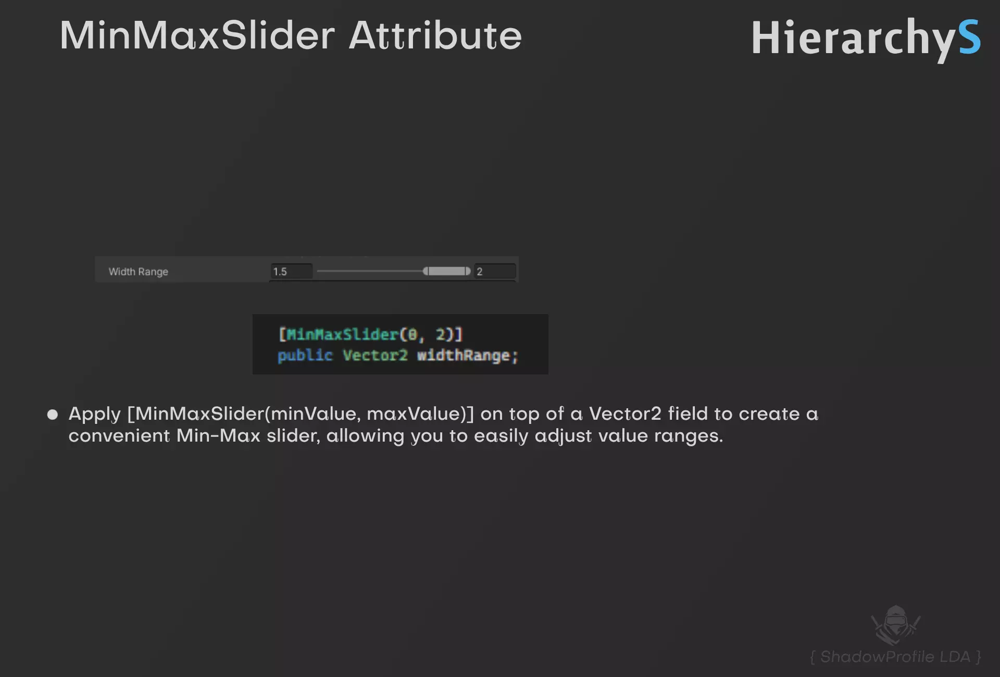
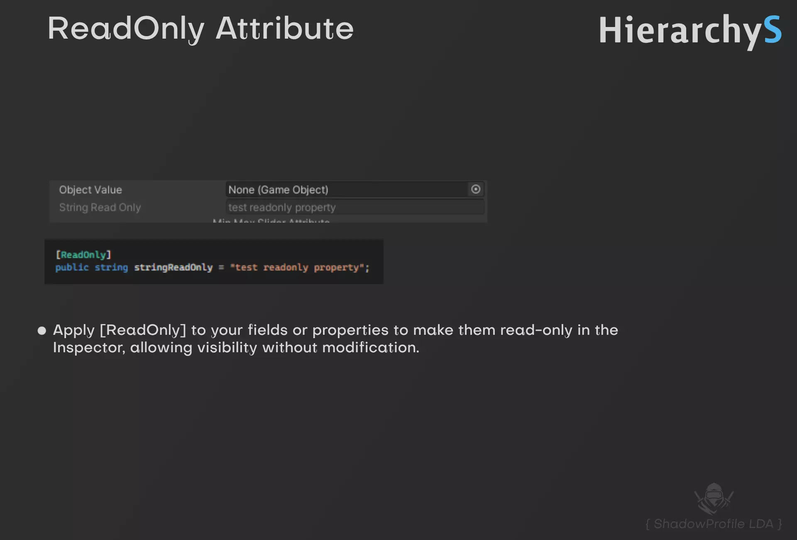

HierarchyS and FavoriteS optimize Unity development with automatic component icons, a Quick Inspector, error tracking, and organized asset management for enhanced productivity and organization.












HierarchyS and FavoriteS are essential tools designed to significantly enhance your Unity development process by improving both scene management and asset handling. HierarchyS transforms the Unity Hierarchy window into a more powerful and intuitive workspace:
Runtime Save Component: Save component values during runtime to preserve changes made during play mode. This is useful for debugging and testing adjustments without losing modifications when you stop the game. Pin & Pin Tracker: Keep track of important objects in your scene with the Pin system. Pin any object for easy access and use the Pin Tracker window to view all pinned objects. This simplifies navigation and speeds up testing and debugging.
Error and Warning Tracker: HierarchyS includes a robust error and warning tracking system that highlights common issues in your scene. This includes:
The asset provides a bunch of Attributes such as Label, ReadOnly, MinMaxSlider, Hide/Show If, Disable/Enable If, Button, Separator.
FavoriteS complements HierarchyS by streamlining asset handling:
Together, HierarchyS and FavoriteS provide a comprehensive toolkit for Unity developers, enhancing scene management, simplifying error resolution, and optimizing asset handling. These tools are designed to make your development process more efficient and organized, ensuring a smoother and more productive workflow.
Get Into
Bug Fix
Component Runtime Save, Pin System, Attributes (Button, ReadOnly, MinMaxSlider, Seprator, Hide/Show if, Disable/Enable if)
Label Attribute